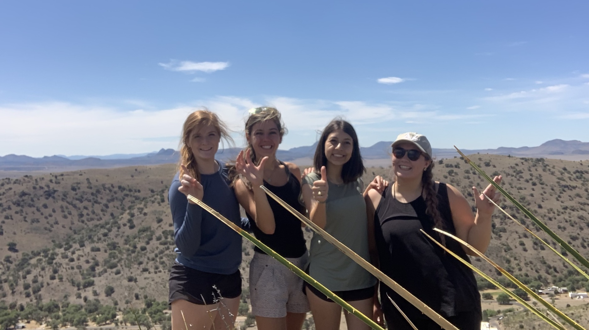

Howdy! My name is Andrea
Espinoza. I am a Junior Computer Science Major at Texas A&M University! I grew up in Midland, Texas. I love serving my community and making a
positive difference. I have had two internships in my college career and am looking to
find an internship for Summer 2021 to learn more skills. I have interned with The City of Midland
and Compasion International. I have learned so much at each internship and am excited to continue learning. In my freetime, I volunteer for Breakaway Ministries and
Grace Bible Church. Learn more about my service here! I love spening time outside where there are lots of trees and I enjoy hiking as well. There are not a lot of places to go hiking around
here but I love to do it when I get the opportunity to.

My Friends and I got to go hiking at
Davis Mountains State Park
this Summer since it is close to Midland!